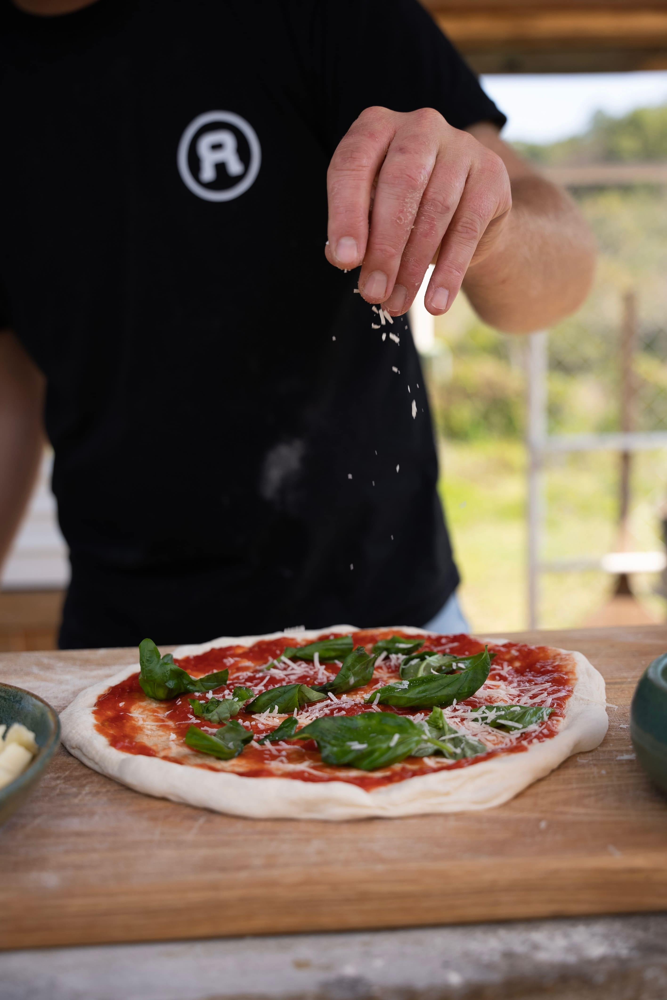

Pizzería de
Andrea
Nuestra Historia
Nuestro amor por la pizza
Nacida en 1968 en Lomas de Zamora, Andrea descubrió su pasión por la cocina gracias a las enseñanzas de su padre. Con raíces en la auténtica tradición italiana, abrió "Pizzeria de Andrea" en 1990. Cada pizza cuenta la historia de su dedicación a ingredientes frescos y técnicas tradicionales, creando una experiencia gastronómica que une lo clásico con la innovación.
Únete a nosotros y celebra la pasión de Andrea por la auténtica cocina italiana. ¡Bienvenidos a Pizzeria de Andrea!.
Plato preferido de los clientes
En la pizzería, la estrella indiscutible es la pizza de rúcula y jamón. Con su base crujiente, salsa de tomate fresco, lonchas de jamón jugoso y generosas hojas de rúcula, esta creación seduce a los clientes con su combinación única de sabores y texturas. Es el plato preferido que nunca falla en satisfacer los antojos más exigentes..
Especial de la casa
En nuestro especial de la casa, la pizza con aceitunas negras y morrones es una explosión de sabores mediterráneos. Con una base de masa crujiente y salsa de tomate, las aceitunas negras aportan su intensidad salada mientras que los morrones asados añaden dulzura y color. Es un plato que cautiva con su equilibrio de sabores y texturas, convirtiéndose en la elección perfecta para aquellos que buscan una experiencia gastronómica única.
Horario y Ubicación
DIRECCIÓN
Cmte. Martín Quenon 982
Río Cuarto, Córdoba
HORARIOS DE ATENCIÓN
Lun - Vie: 20:30 - 01:00
Sábado: 20:30 - 02:00
Domingo: 19:30 - 24:00